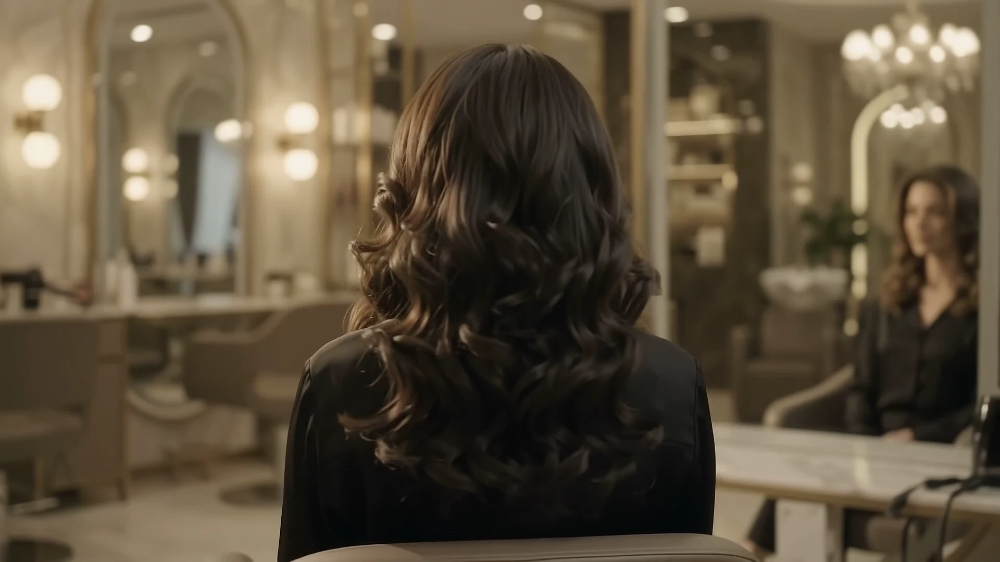

Salon de coiffure · sur rendez-vous
Nitsy Fashion
Mèches, lissage, reflets, coiffage. Une coiffure qui te ressemble, posée avec le temps qu'il faut.
Le moment où tu te reconnais.

Au salon
Installe-toi. Rien ne presse.
Ton rendez-vous, c'est ton moment : on prend le temps de bien faire, du shampoing au dernier coup de brosse.


Avant tout
On commence par t'écouter.
Ce que tu aimes, ce que tu veux changer, ce que tes cheveux supportent. On note tout, puis on se lance.
Et le résultat se voit de dos.
Une ligne nette, des reflets posés à la main, du mouvement jusqu'aux pointes.

Au salon
Des mèches choisies avec soin.
- Pose de mèches sur devis
- Lissage sur devis
- Reflets & couleur sur devis
- Coiffage sur devis
Rendez-vous
À toi la prochaine scène.
Dis-nous ce que tu as en tête. On te recontacte pour fixer le rendez-vous qui te convient.